어그로때문에 글제목을 저렇게 적긴 했지만
사실 반이상은 건축 얘기가 될것임
르 코르뷔지에
서양 킬구같이 생기기도 한 이 아저씨는 (인종차별 아님)
사실상 현대건축의 기반 대부분을 만들었다고 해도 과언이 아니다
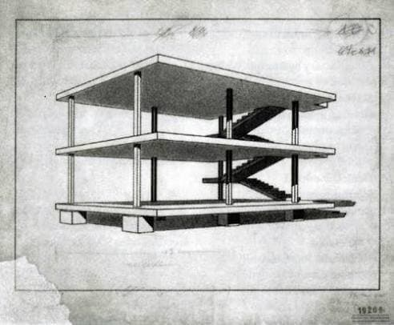
이 극한의 미니멀리즘 건축은
뭔가 재료가 좀 바뀌긴 했는데 일단 전형적인 철골구조물의 형태가 되었고
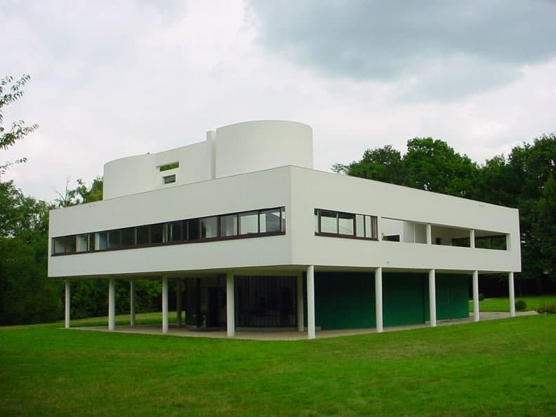
우리가 -원종- 당하고있던 1930년쯤에 지어진 이 구조는 (필로티)
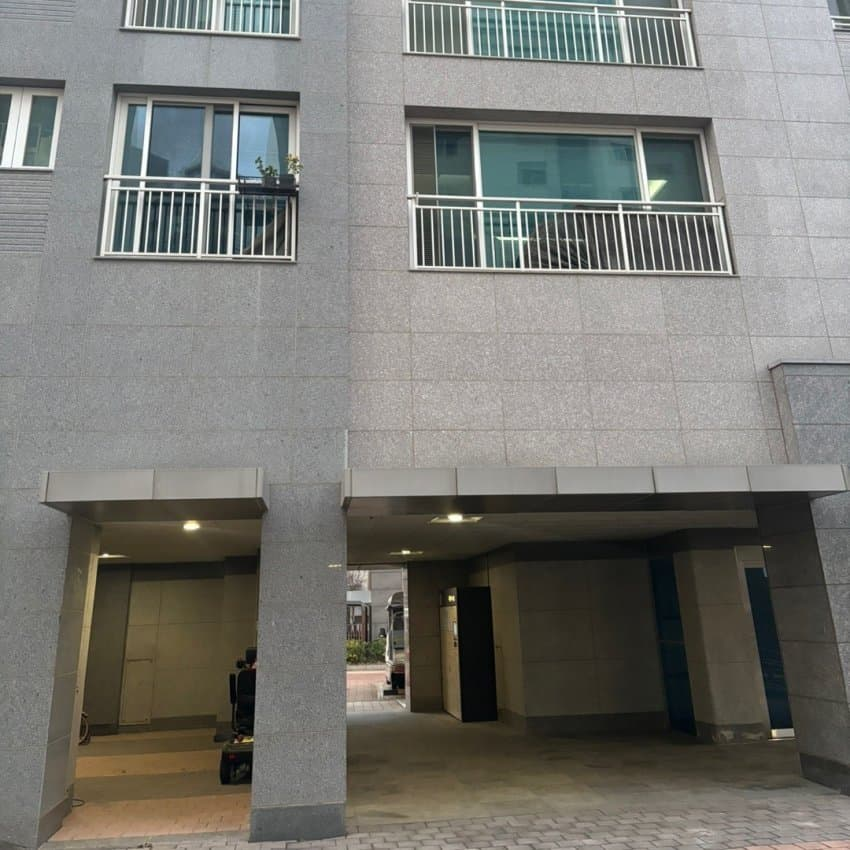
대한민국 아파트/다세대주택의 대표구조로 자리잡았다
업적얘기를 좀더 하기전에 우선
르 코르뷔지에가 히틀러에게 도킹을 시도했으나 (진짜임) 실패한 이야기에 대해 먼저 알아보도록 하자
대충 사례2개를 봤으면 알겠지만
이 아저씨는 엄청나게 도전적이고 혁신적인 시도를 많이했다
그중에는 도시 전체를 갈아엎는 계획도 있었다
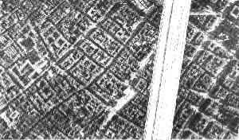
이거를
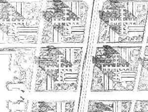
이렇게
파리라서 굳이 화질깨진 옛날 그림으로 안봐도 될거같다
그러니까
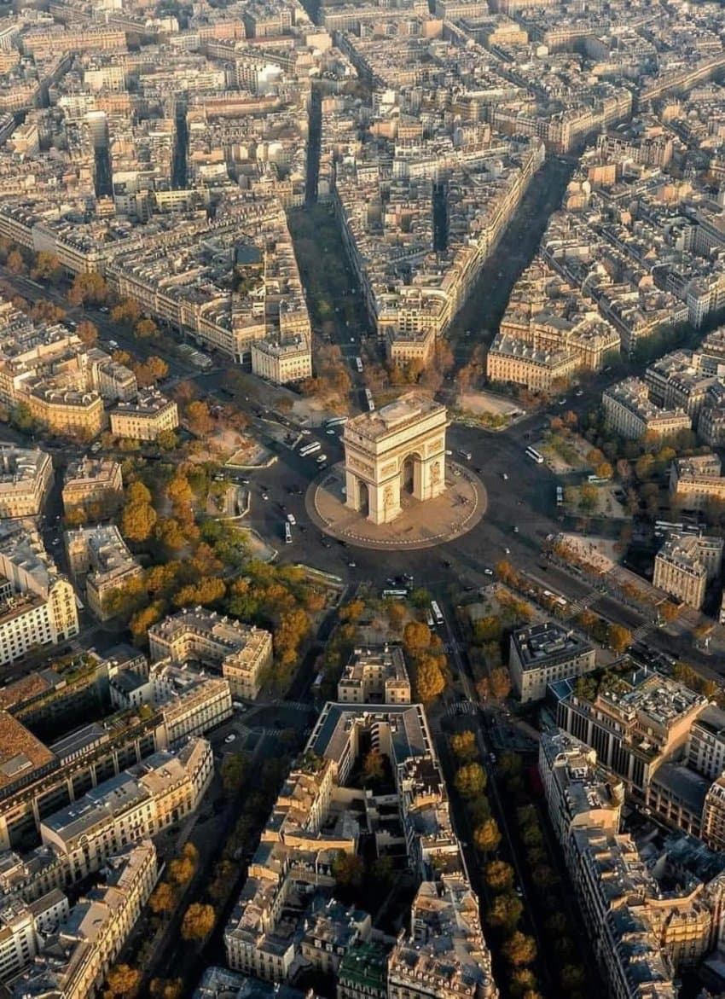
이거를
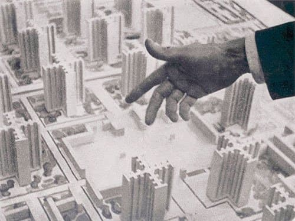
이렇게

싱붕이들이 봐도 좀 많이 무리인거같다
근데 이걸 진짜로 해줄수있을거 같았던 정권이 있었다
존나게 쎈 중앙권력이
?
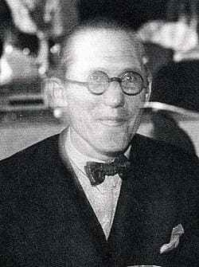
ㅎㅎ각하 실례가 안된다면
그런데 이전글에서도 얘기했지만
히틀러는 모더니즘의 ㅁ자만 보여도 거의 개발작을 해댔다
근데 얘는 당대 모더니즘의 선구자네?
......
거 나중에 연락드릴게요
결국 이야기만 나오고 히틀러가 미대에 떨어진 충격으로 권총ㅈㅅ하게 되면서
둘의 도킹은 성사되지 못했음
추가로 설명할만한 르 코르뷔지에의 업적은 대충 아래와 같음
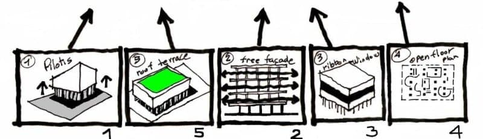
현대건축의 5원칙 성립
1. 필로티
2&3. 자유로운 평면과 입면
4. 수평창
5. 옥상정원
위에서도 말했듯이
거의 대한민국 아파트 메타로 자리잡은 1층필로티
좀 심하게 자유로운 평면과 입면
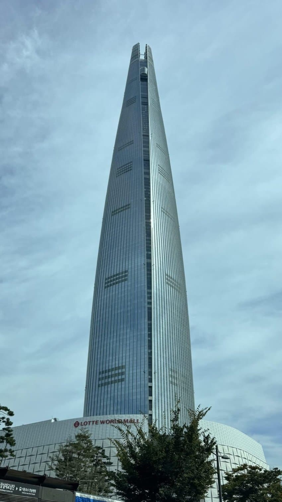
수평창 (창문 ----로 나있는거)를 넘어서
벽면 전체가 창문인 커튼월
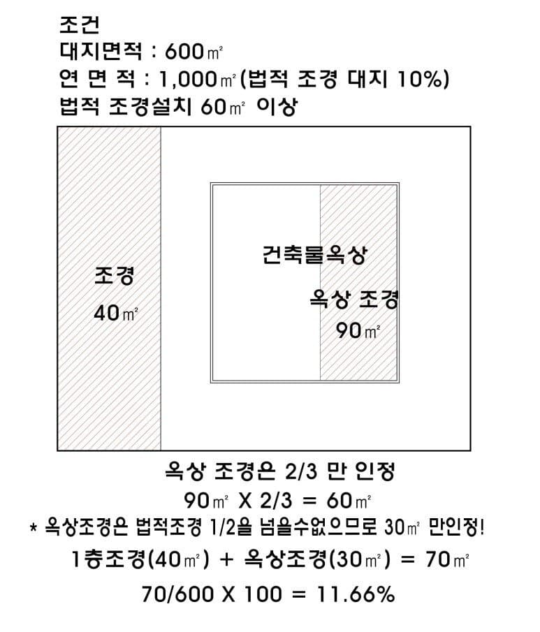
오버워치 둠피스트급 좆사기라고 생각되었는지
너프 전용 관련법규마저 따로있는 옥상정원 (아님)
모두 현대에서는 계승받거나 발전시킨 요소들이다
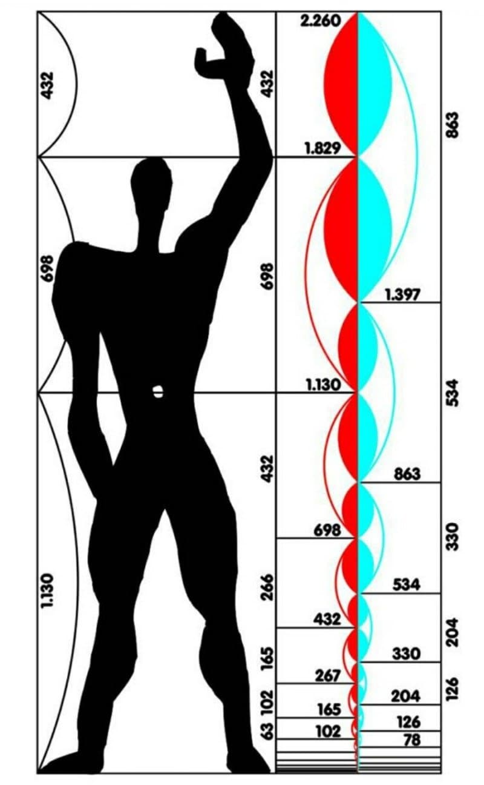
그리고 싱붕이들은 이 요상한 그림을 살면서 한번쯤 본적이 있을것이다
없으면 지금 본걸로 치자
모듈러라고 부르는 이것은
성인남성의 키를 182cm, 손을 뻗었을때의 높이를 226cm라고 가정하고
추가적으로 황금비를 반영하여 건물에 일관되게 적용한 것임

근데 글쓴놈이 팔뻗으니까 207cm밖에 안나오는데
코쟁이들 지들밖에 모른다 소리가 절로 나오는 상황이다
(인종차별맞음)
아무튼 이 모듈러는
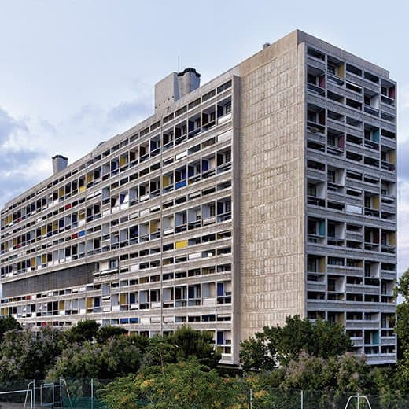
1952년에 한국식 아파트의 근본같아 보이는 이 건물에 성공적으로 적용되었음
'사람 사는 공장'이라는 인식을 받았다면 그게 정상인 것이
르 코르뷔지에는 '집은 살기위한 기계다'라는 말을 남길정도로 실용주의가 강했음
어떻게 보면 이 구절을 가장 강하게 물려받은 사례가 서울의 도심이 아닐까 생각함
1950년대에 싹 리셋돼서 모든것을 새로지을 기회가 있었기 때문
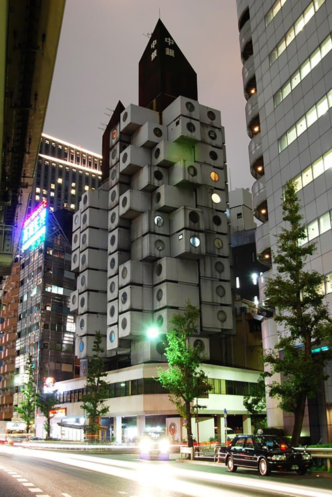
요즘의 모듈러라고 한다면
같은구조를 복붙하는듯한 이 모듈러 건축이 먼저 떠오를수 있음
이건 르 코르뷔지에의 모듈러랑은 살짝 다르지만 건물을 대량생산한다는 큰 맥락 자체는 그의 의도와 같다고 볼수있음
주된 장점으로는
공사기간 절약, 품질향상 등이 있다
참고로 둘이 같은단어가 아니라 철자가 다름
Modulor Modular
그래서 르 코르뷔지에 모듈러는 옛날책에서는 모듈로라고 번역되는 경우도 있었음
아무튼 이 모듈러 건축이 아주 성공적으로 반영된 게임이 있다
무엇이냐 하면
1m * 1m * 1m의 기본 치수
3d툴 사용에 비해 시간을 매우 절약할수있는 건축방식
마인크래프트는 거대한 모듈러라고 할수 있음

댓글
댓글 보관 대기 중입니다. 원문 응답 오류가 있으면 다음 실행에서 다시 수집합니다.